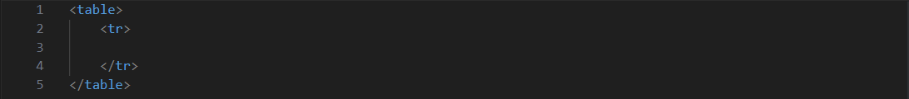
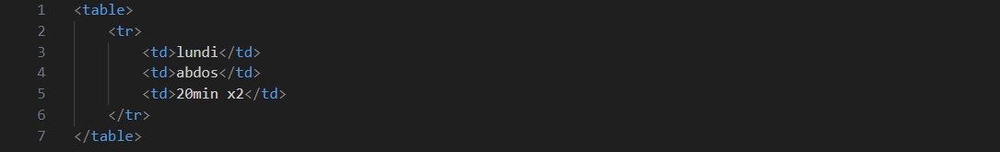
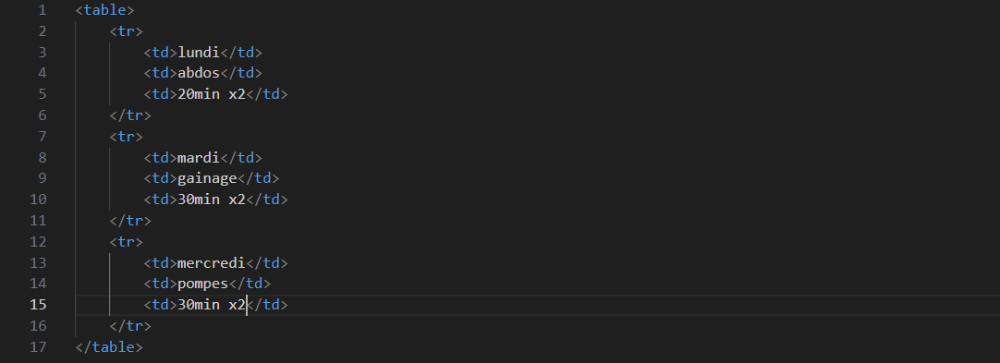
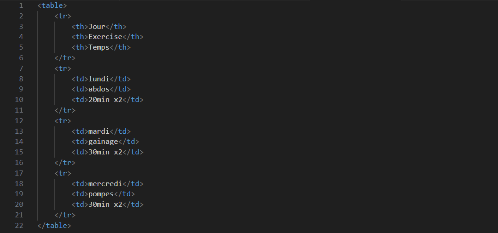
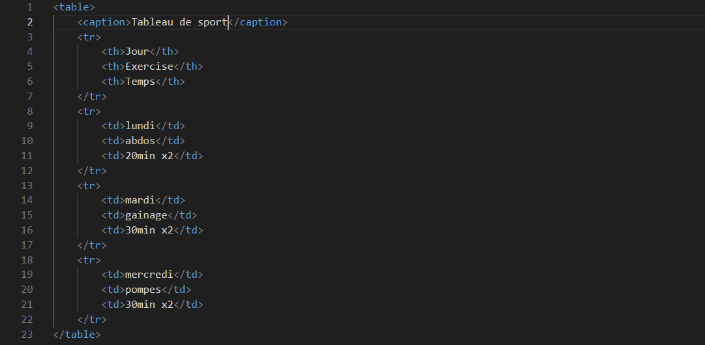
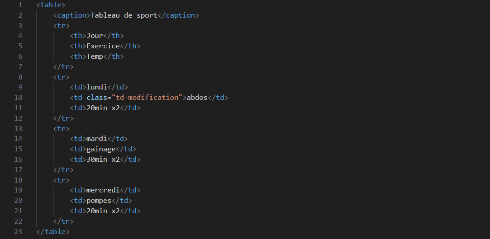
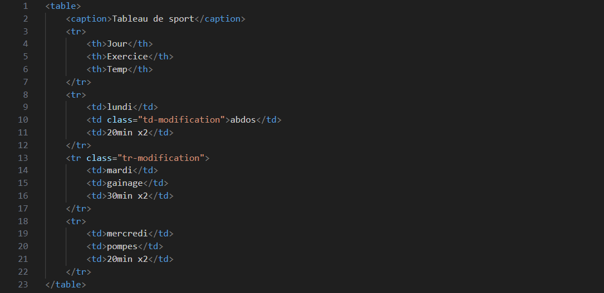

.Apprendre à créé un tableau en HTML et CSS.
Pour commencer, nous allons utilisé la balise en paire
<table> </table>
qui indique le début et la fin du tableau.
Cette balise est de type block,
on va donc la placer en dehors d'un paragraphe ou d'une
div.
On associe ces balises avec la valeur
<tr> </tr>
et <td> </td>.
Pour construire un tableau ligne par ligne,
on indique pour chaque ligne, <tr>
(pour table row ou "rangée du tableau")
et le contenu des différentes cellules, <td>
(pour table data ou "donnée" ou "entrée"):
- <tr> </tr> indique le début et la fin d' une ligne du tableau.
- <td> </td> indique le début et la fin du contenu d' une cellule.
| Jour | Exercice | Temp |
|---|---|---|
| lundi | abdo | 20min x2 |
| mardi | gainage | 30min x2 |
| mercredi | pompes | 20min x2 |
Je vais vous détaillez les étapes pour créé le tableau si dessus.
1.
Pour commencer, dans la partie HTML, nous allons inseré la balise en paire
<table> </table>.
Exemple en image:
2.
Puis on ajoute la balise en paire <tr> </tr>
pour créé une ligne a notre tableau.
Exemple en image:

3.
Et on indique le nombre de colonne avec la balise en paire
<td> </td>.
On veut que notre tableau est 3 colones, donc on ajoute 3 fois la balise en paire
<td> </td>
et on leur donne un contenue.
Exemple en image:

Rendu Web:
| lundi | abdos | 20min x2 |
4.
Je sais, ça ne resemble pas vraiment a un tableau. Pour lui donner bonne allure
on va utilisé le CSS.
Exemple en image:

Rendu Web:
| lundi | abdos | 20min x2 |
5.
C'est mieux, mais il y a un espace entre les colonnes.
Pour collé les colones entre elle, on va utilisé la propriété
border-collaspe:.
Exemple en image:

Rendu Web:
| lundi | abdos | 20min x2 |
6.
Sa commence a resemble beaucoup plus a un tableau comme ça.
Mais notre tableau doit avoir 3 lignes de 3 colones.
Pour les rajoutés on a juste a répètte l'opération.
Exemple en image:

Rendu Web:
| lundi | abdos | 20min x2 |
| mardi | gainage | 30min x2 |
| mercredi | pompes | 30min x2 |
7.
On va juste rajoutés la propriété padding: et width: dans l'attribut <td>
Exemple:

Rendu Web
| lundi | abdos | 20min x2 |
| mardi | gainage | 30min x2 |
| mercredi | pompes | 30min x2 |
8.
La façon de faire, reste la même que précédemment, la seule différence ces que l'on
remplace la balise <td> par la balise <th>.
Exemple en image:

Rendu Web:
| Jour | Exercise | Temps |
|---|---|---|
| lundi | abdos | 20min x2 |
| mardi | gainage | 30min x2 |
| mercredi | pompes | 30min x2 |
Bon il nous reste un dernier point a voir.
9.
Un titre, il manque un titre a notre tableau.
Pour créé un titre, on va utilisé la balise en pair <caption>.
Exemple en image:

Rendu Web:
| Jour | Exercise | Temps |
|---|---|---|
| lundi | abdos | 20min x2 |
| mardi | gainage | 30min x2 |
| mercredi | pompes | 30min x2 |
10.
Donc pour centrer notre tableau, il faut rajouter dans l'attribut table,
la propriété margin, suivi de la valeur auto.
Exemple en image:

Rendu Web:
| Jour | Exercice | Temps |
|---|---|---|
| lundi | abdos | 20min x2 |
| mardi | gainage | 30min x2 |
| mercredi | pompes | 30min x2 |
11. Nous avons pratiquement le même tableau que celui de la présentation au début du site. Il ne reste plus qu'a rajouter les couleurs sur la case abdos et sur la ligne qui commence par mardi.
Comme pour le reste, rien de bien compliquer. Pour modifier un case en particulier,
il faut lui donner une class spécifique.
Exemple en image:

Maintenant que l'on as créé une class a la propriété <td>, il reste plus qu'a
lui donné une couleur dans la partie css.
Exemple en image:

Rendu Web:
| Jour | Exercice | Temp |
|---|---|---|
| lundi | abdos | 20min x2 |
| mardi | gainage | 30min x2 |
| mercredi | pompes | 20min x2 |
12.
On sait modifier la couleur d'une case en particulier, mais comment fait-on pour modifier
une ligne complette.Il faut juste répéter la même opération mais cette fois si, ces sur la balise
<tr> que nous allons créé une class.
Exemple en image:

Maintenant que l'on as créé une class a la propriété <tr>, il reste plus qu'a
lui donné une couleur dans la partie css..
Exemple en image:

Rendu Web:
| Jour | Exercice | Temp |
|---|---|---|
| lundi | abdos | 20min x2 |
| mardi | gainage | 30min x2 |
| mercredi | pompes | 20min x2 |
Conclusion:
C'est tous, pour la création d'un tableau; enfin...presque!
Nous avons appris la création d'un tableau simple, il est largement suffisant,
mais si vous voulez créé un tableau plus élaborer, alors
il va faloir apprendre a créé un tableau plus complexe.
Si ça vous intéresse, rdv a la page suivante.